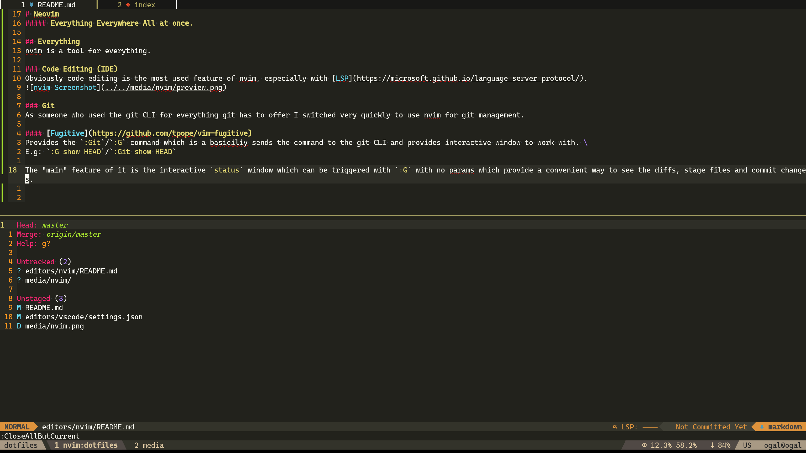
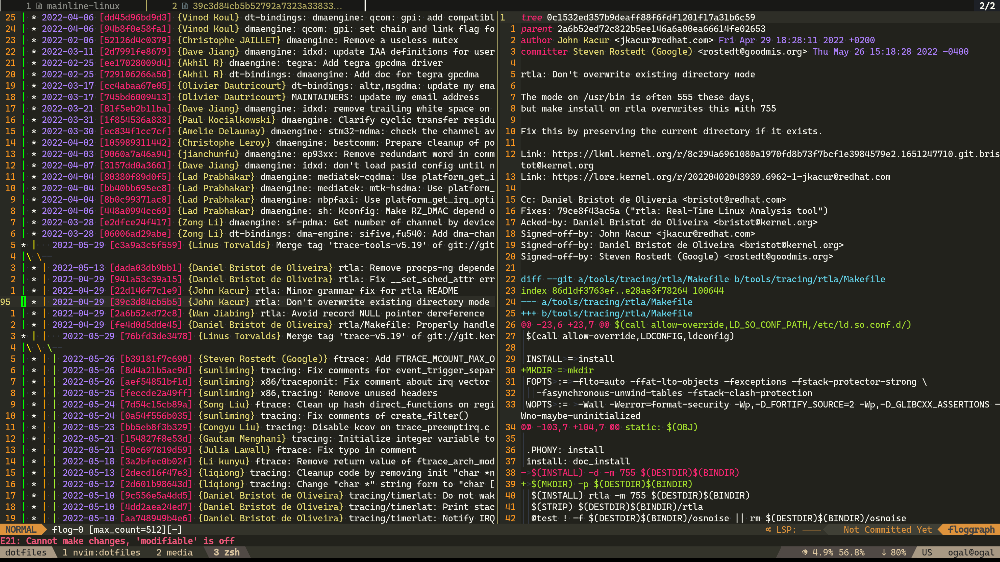
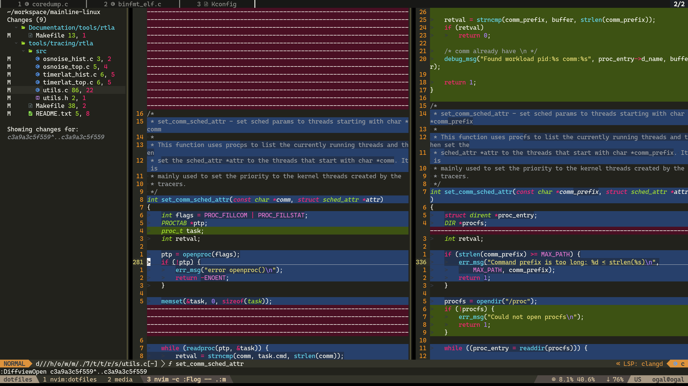
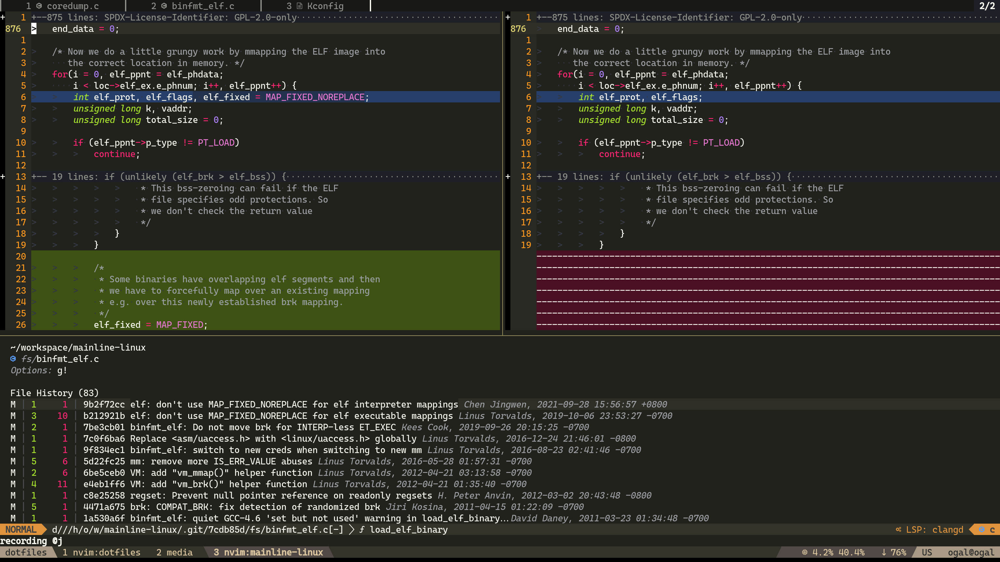
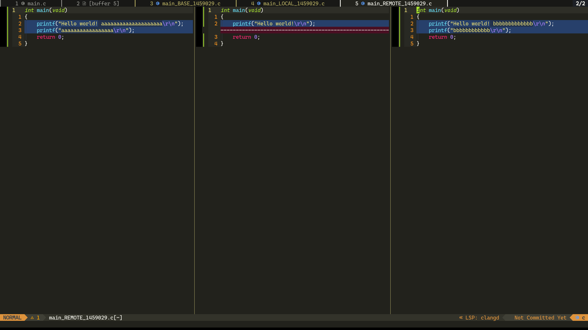
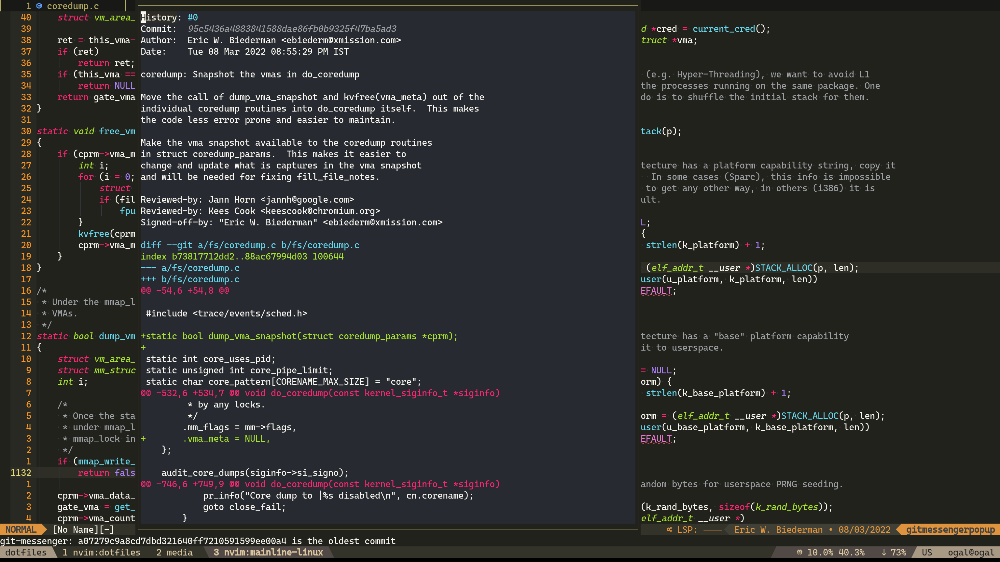

Why should I learn nvim?
As a professional, you are going to spend a lot of time on your computer, especially editing code. You want do it in the most fun and efficient way. nvim is fun: fun to learn, fun to write with, fun to improve at and most importantly - it is very very efficient.
You can use vim with any keyboard
vim gives you the option to use only the basic keyboard keys: the alphabetical keys, ctrl, alt, shift, escape, enter.
You don't need to find where is end, pageup/down and home each time you switch a keyboard/laptop.
If you can type on a keyboard, you can use vim the way you're used to.
Keep your hands on the keyboard
vim can be used without a mouse at all, and it's even recommended to use it this way, as it will "force" you to stay in the "flow" while programming without needing to move your hand over to the mouse and back to the keyboard.
vim is designed to be used with type touching.
The important binds are on/next to the keys your hands should always be on: asdf jkl;.
It isn't a must to touch type (I don't touch type 100%) but I recommend trying to switch anyways.
{kind=link}
Disclaimer
You can use a mouse.
I configured a mouse to allow "guests" to show me stuff in my workstation.
I use a mouse to read code, personally I find it more convenient.
I use a mouse when showing someone in my workstation so they can follow along.
The right way to program
It's a strong saying but I'm convinced that nvim is the right way to program.
When you're using vim, you "talk" to the editor rather than "move" it.
Imagine, instead of asking your friend to pour you a glass of water, you would give instructions to your friend on how to pour you a glass of water, which would look like something like this:
- Open the bottle
- Grab the glass
- Grab the bottle
- Make an angle with the bottle towards the glass
- Put down the bottle
- Close the bottle
Wouldn't it be easier to just say "Hey, can you pour me glass of water?" Well, that how it feels to use other editors after you're using vim, vim lets you "talk" to the editor.
Feel "at home" everywhere
Most TUIs programs support vim binds which will make you feel fast in any program that you usually use, less, man, tmux and many more.
You can feel "at home" in browsers too, with the vimium extension
Edit files through ssh with ease
Lightweight and Native
nvim is lightweight, starts up fast, renders fast and a lot of the plugins tend to use a strong native binary to run the heavyweight tasks.
For example, to search for text across the project telescope.nvim runs ripgrep.
Rich plugin ecosystem
nvim has a huge community that develops plugins for everything you can and can't imagine.
nvim doesn't miss on any IDE feature that other IDEs have to offer.
nvim plugins are the first to "evolve" when a new tech is coming to the IDE world, the nvim community is the first to adapt it, e.g: ripgrep
You can take a look at the awesome nvim plugin list. I recommend to "watch" to get updates about new plugins.
Be comfortable
nvim is basically a framework for an editor, it can't do much without plugins but it gives the user the ability to configure the editor in a way they're most comfortable with.
Imagine sitting on a chair you built exactly to your size. The back rest covers all of your back, the head rest is exactly in the right height and has the perfect shape to support your head and neck. The arm rests match exactly the height of your desk, and the chair is at the perfect height for your legs.
This is how I feel when I code in nvim, I sit in a chair I build exactly for my needs, and I can keep improve the way I code because I can improve the way my editor works.
How should I start use nvim?
nvim has a steep learning curve - it takes time and patience to master, you will find that you need to invest time so you can start using nvim as your daily driver.
If you are a professional programmer I recommend to start using it in your personal projects and integrate it slowly to your professional workflow. I did it by having my previous editor (Sublime Text) open while nvim was open too.
I started by trying to do simple actions with nvim and moving to sublime when I needed to do complicated stuff that I struggled to do with nvim. After I got comfortable with basic functionality, I started trying to do more complex actions with nvim, sometimes I managed to yet sometimes I also failed and went back to sublime. Eventually I felt more comfortable with nvim and stuck with it all day long.
The bottom line is that it'll take time and effort but eventually it will be worth it, for me it sparked the old feeling of learning how to edit your code, and I still feel it every day.
Neovim Requires Time
Neovim requires a lot of time learning additional to the learning curve you will have to make bunch of configurations other than the nvim config itself, terminal, nerdfont, plugins, etc, it might be not for you.
If you are 100% dedicated to learn and use neovim. I strongly recommend to start backing up your work environment config with some kind of dotfiles framework. I use dotbot.
The vim Language
Buffers, Splits/Windows and Tabs
- Buffers -
bufferis an open file, which can be edited from multiplesplits - Splits/Windows -
splitsakawindowsare the panes which you can move through - Tabs -
tabis a set ofsplits, like atabin aterminal, people don't use it very often.
Binds
:e <file>- will open a new file (buffer):b <buffer>- will switch to an already opened file (buffer):vsplit- will open a vertical split:split- will open a horizontal split- use
:help tab-pageto read more about tabs (they're not very necessary)
Keybinds
Often you'll see a keybind described as something like that: ggyG - which copies the entire buffer.
All the signs in the keybind are meant to be pressed as you type them.
To execute this bind you'll need to press:
gg- move to the top of the filey- start a copyshift+g- end the copy from the cursor to the end of the file
In vim you don't hold the keys in order to complete a key sequence as you type them, and you can configure the timeoutlen to make vim wait more/less between keystrokes.
Keybinds naming
You don't need to memorize keybinds as the letter stands for its action.
y- yankp- paste
Each time where I introduce an action in this guide, I'll mark the letter I use to remember the bind.
Special Keys
<cmd>- is:which starts a cmd<cr>- isenter<Esc>- isEscape<C-x>- is Ctrl+x<M-x>- is alt+x<M-X>- is alt+shift+x<A-x>- is alt+x<A-X>- is alt+shift+x<leader>- is the leader key
You can type :help <key> to open a help split for that key, the key can be anything, it can be G and it can be <cr>
Leader
vim maps most of the keyboard by default, <leader> acts as a prefix for custom user binds.
Leader is remappable, the default mapping is , most vim users change it to <Space>
Help
There's a help page for everything, start using it as soon as possible, it's like man just better and for vim.
Modes
There are a lot of modes in vim, I'll cover the important ones.
To exit from each mode back to normal press Escape. I recommend remapping it to capslock, you're going to press it a lot and it will be much easier to use the pinky without moving your hands.
- Normal - This is where you will be usually, you can move, copy in this mode, and much more
- Insert (
i) - Insert text to the buffer, you want to be in this mode only when you're actually inserting text, you don't want to move in this mode - Visual (
v) - Select and copy/replace text - Visual Line (
V) - Select and copy/replace text by lines - Command (
:,/) - Inserting a command
How to map Capslock to Escape
- GNOME (Ubuntu) - Install
gnome-tweak-tool, startTweaksthenKeyboard & Mouse -> Additional Layout Options -> Caps Lock behavior. - macOS
- Windows - Install AutoHotKey and add
Capslock::Escto anahkscript.
Basic Configuration
One of nvim's strengths is that it's highly configurable, you can customize everything.
Setup your editor in a way that'll be nice for you to look at and it won't be filled with useless buttons/stuff.
I recommend to create your own configuration but it takes time and effort.
We will talk about the advantages at the advanced configuration chapter but I recommend to use preconfigured configuration for now, unless you are a config nerd like me.
Terminal Emulator Setup
nvim can be run with a GUI frontend or how it was intended to, in a terminal emulator.
I recommend to use one of the modern cross-platform terminal emulators:
- Alacritty - recommended with tmux/i3 for splits and sessions (I use Alacritty + tmux)
- Kitty - I never used it but people say it's nice
- Wezterm - Lua configured terminal, I don't like the design, especially the way cursor behaves in it, but it seems the community love it.
Nerdfont
It's highly recommended to install a nerdfont to support icons in your terminal, many plugins utilize it.
I use CascadiaCode, JetBrainsMono is nice too.
Keybinds limitations
Because of ascii terminals don't support Ctrl+Shift+<X> keybindings, here's a great comment that explains why.
Some terminals allow to use a workaround, but it's not a must (I don't use Ctrl+Shift+X binds).
Options as Alt in macOS
To be able to use Alt binds in your terminal you need to configure your terminal emulator to do so.
How to Install nvim
I recommend to install the latest release, Nvim development is the nightly.
You can install nightly which is pretty stable and doesn't break often but you don't want to bother yourself with bugs as a beginner.
Preconfigured Configurations
There are several preconfigured configurations, these are the popular ones:
LunarVim
Personally I skipped using a preconfigured configuration, but I highly suggest to use it as a starting point. LunarVim is the easiest to start with, Installation link.
Make sure you read and edit the default configuration to your taste.
To open the configuration press Space, SHIFT+L, c.
To see the keybinds press Space, SHIFT+L, k.
How to Install Plugins
I'll recommend several plugins along the way, make sure you are not lazy to install them.
How to download a plugin
nvim plugins are git repositories, a package manager downloads and updates them, packer is the standard one and it's already installed in LunarVim.
In LunarVim's configuration you will find:
-- Additional Plugins
lvim.plugins = {
{"folke/tokyonight.nvim"},
{
"folke/trouble.nvim",
cmd = "TroubleToggle",
},
}
lvim.plugins is passed to packer, folke/tokyonight.nvim is a short for github.com/folke/tokyonight.nvim.
Which means when a plugin tell you to install it by use { 'plugin_author/plugin_name', more_options }, just copy { 'plugin_author/plugin_name', more_options }.
Note: LunarVim runs :PackerInstall for you when the config changes.
Useful Packer Commands:
:PackerInstall- Install new added plugins.:PackerStatus- List all installed pluigns.:PackerSnapshot- Take a snapshot of your current plugins versions (useful before updating).:PackerUpdate- Update all plugins.:PackerClean- Remove unused plugins.
How to configure a plugin
Usually a plugin will provide a setup function which configures the plugin's behavior, most plugins won't activate if the setup function isn't called.
Usually the setup function receives a table, most plugins use the override standard - the keys in the table you pass will override the default, other keys keep their default value.
The defaults are usually in the plugin README and in the :help <plugin>
Note: I recommend adding the GitHub shorthand above the setup function as a comment, you can use open.nvim to access the plugin repo quickly.
How to install vim plugin
nvim supports vim plugins, the install of them is similar to nvim but the configuration is done by vim variables rather than setup function.
The documentation of the plugin usually would be written in VimScript format as so:
let g:cool_plugin_variable = 1
The equivalent of that line in Lua is:
vim.g.cool_plugin_variable = 1
You can read more about vim variables at :help internal-variables.
Recommended Plugins to Start With
- Make sure you pick a colorscheme you like or create your own like I did.
- auto-session - Auto save your session, so you can jump back to your session after exiting/restarting nvim.
- vim-tmux-navigator - great plugin for tmux users.
- Comment.nvim - Adds comment operation (included in LunarVim's core plugins).
- lsp_signature.nvim - Show function signature when you type.
- guess-indent.nvim - Automatic indentation style detection.
- nvim-autopairs - Auto pair, when typing a pair, eg:
(, add the closure and set the cursor in between. (Included in LunarVim) - open.nvim - Open GitHub shorthand and more straight from vim.
Programming languages support
Some languages have plugins to support them specifically, usually the plugin takes care of the LSP setup (read below), so make sure you don't setup the LSP more than once. I recommend to skip the LSP setup of the plugin and set it up yourself or with mason.
- rust-tools
- flutter-tools
- go.nvim
- neodev.nvim - Lua develop for nvim api (Already installed by LunarVim)
- For other languages check out awesome-neovim
auto-save.nvim
I hated using autosave in other text editors, but because vim has modes it knows exactly when a text was changed.
On InsertLeave which is triggered when you leave Insert mode, and on TextChanged which is triggered when text was changed in normal mode.
Autosave + autoformat = annoying behavior. Make sure you disable auto format, I wrote a simple plugin to format when I switch buffers.
How to disable autoformat in LunarVim:
lvim.format_on_save = false
Autosave + live config refresh = annoying behavior. Make sure you disable autosave in your config if you like live config refresh.
An example for how to do it in LunarVim:
local user_config_file = require("lvim.config"):get_user_config_path()
require("auto-save").setup {
enabled = true,
condition = function(buf)
local fn = vim.fn
local utils = require("auto-save.utils.data")
if vim.api.nvim_buf_get_name(buf) == user_config_file then
return false
end
if fn.getbufvar(buf, "&modifiable") == 1 and
utils.not_in(fn.getbufvar(buf, "&filetype"), {}) then
return true -- met condition(s), can save
end
return false -- can't save
end,
}
Options
Options control the behavior of nvim, they can be set to boolean, number or string.
To set an option type :set <option>, to see the current value of an option use :set <option>?.
boolean options are enabled by :set <option> and disabled by :set no<option>.
E.g: :set relativenumber enables relativenumber and :set norelativenumber disables it.
Every option has a help tag for it, for example :h relativenumber
The options are listed in :h option-list.
In nvim you can access the options by vim.opt
Sensible Options
local opt = vim.opt
opt.number = true -- Enables line numbers
opt.relativenumber = true -- Enables relative line numbers
opt.autoindent = true -- Indent automatically
opt.cursorline = true -- Enables cursor line
opt.ignorecase = true -- Ignore case when searching
opt.splitright = true -- Split to the right on vertical
opt.splitbelow = true -- Split below when horizontal
opt.swapfile = false -- Don't use swap files (I use auto-save.nvim instead)
opt.wrap = true -- Wrap lines
opt.updatetime = 100 -- mainly for trld.nvim which utilize CursorHold autocmd
opt.formatoptions:append('cro') -- continue comments when going down a line, hit C-u to remove the added comment prefix
opt.sessionoptions:remove('options') -- don't save keymaps and local options
opt.foldlevelstart = 99 -- no auto folding
Key mapping
Key map can be set to specific modes.
The important ones:
n- Normal modei- Insert modex- Visual & Select modev- Visual mode:h map-commandsfor the full mode list
To set a keymap you should use vim.keymap.set or even better a map function with default value for opts.
local function map(mode, lhs, rhs, desc, opts)
opts = opts or { slient = true }
opts.desc = desc
vim.keymap.set(mode, lhs, rhs, opts)
end
mode- mode for which the keymap is added to, can be a single mode'n', table of modes{'n', 'x'}, or empty''for all modes.lhs- The key you need to press to activate the key maprhs- Can be a lua function to call or a string to let vim "type", for examplenzzexecutesnand thenzzwhich are binded tonextandrecenter.desc- Description for the keymap.opts- Table of options for the keymap, read more at:h map-arguments
Note: LunarVim keymaps are set different make to sure to read this too
Autocommands
An autocommand is a command that is executed automatically in response to some event, such as a file being read or written or a buffer change.
For example a good autocommand to highlight the text that was yanked.
-- Highlight on yank
vim.api.nvim_create_autocmd('TextYankPost', {
pattern = '*',
callback = function() vim.highlight.on_yank({timeout=350, higroup='Visual'}) end
})
Plugins can add custom autocommands too!
For all the builtin autocmds see :h autocmd-list.
Read :h nvim_create_autocmd for full explanation.
Shell Setup
Don't forget to set nvim as your default terminal editor like so:
export EDITOR='nvim'
Other good tools with vim binds
- Vimium - Vim binds for your browser.
- btop - Resource viewer that can be configured to use vim binds.
Plugin Tools
The preconfigured configuration handles the installation of LSP and Treesitter, so you don't need to worry about handling it, but it's recommended to familiarize yourself with both of these tools to understand how other plugins utilize them.
Backend Binaries
Some plugins utilize external binaries to make nvim fast, I recommend to instal them.
- ripgrep aka rg - Better
grep. - fd - Better
find.
LSP
The idea behind the Language Server Protocol (LSP) is to standardize the protocol for how such servers and development tools communicate. This way, a single Language Server can be re-used in multiple development tools, which in turn can support multiple languages with minimal effort.
Which means nvim/sublime/vscode get the same Intellisense.
The servers run locally on your PC and are optimized to run fast.
nvim implements the fastest lsp client.
Treesitter
Tree-sitter is a parser generator tool and an incremental parsing library. It can build a concrete syntax tree for a source file and efficiently update the syntax tree as the source file is edited. Tree-sitter aims to be:
- General enough to parse any programming language
- Fast enough to parse on every keystroke in a text editor
- Robust enough to provide useful results even in the presence of syntax errors
- Dependency-free so that the runtime library (which is written in pure C) can be embedded in any application
Basically it provides a fast unified syntax query for different languages, this allows to build plugins that utilize the unified syntax query.
E.g: nvim-treesitter-textobjects which allows to do an action on a code context such as copy the function/class/argument/loop and more, we will elaborate on that later.
Note: make sure you to install treesitter parser for your language by adding it to the ensure_installed table or run :TSUpdate {lang}.
Movements and Operators
vim is built on actions that are mostly built on 2 types, an operator and a movement.
Basic binds
i- enter Insert modea- enter insert mode After the cursorI- enter Insert mode at the beginning of the lineA- enter insert mode at the end of the line (same asabut for the entire line)o- insert new line belowO- insert new line aboveu- Undo, check out undotreeCtrl-r- Redozz- Recenter the screen, there are more binds for screen actions but this is the most important one
Basic movements
Arrows
h- leftj- downk- upl- right
It takes some time getting used to it but it's worth it, I recommend disabling the arrow keys for movement and try the game hjkl in vim-be-good.
-- Disable arrows movement
map('', '<Up>', '<Nop>')
map('', '<Down>', '<Nop>')
map('', '<Left>', '<Nop>')
map('', '<Right>', '<Nop>')
Multiply Movement
You can multiply every movement by entering a number before the movement.
For example: 3j will jump 3 lines down
Words
w- jump Word forwardb- jump word Backwardse- jump forward to the End of the wordge- jump to the End of the previous word
Capital will change the behavior from word to WORD, read :help word and :help WORD to understand the differences
Generics
0- go to the beginning of the line$- go to the end of the line<C-u>- go Up half a page<C-d>- go Down half a page%- jump to the pair of the bracket/quote/ifdef your cursor on<C-o>- jump to the previous position you jumped from (you can do it multiple times)<C-i>- jump to the next position you jumped to (you can do it multiple times)
Pair Movments
The standard way to jump forward to something is ] and backward is [.
Some examples
]m/[m- Jump to Method]]/[[- Jump to section}/{- Jump to paragraph]c/[c- Jump to diff (Change)
I suggest to install vim-unimpaired which adds more pair movements.
Searching
Search across the file
These are not movements!
/- to start a forward search?- to start a backward searchn- go to the Next occurrenceN- go to the previous occurrence*- forward search the current word under cursor#- backward search the current word under cursor
I recommend to remap n and N to nzz and Nzz, zz centers the screen by the line you are on, these binds will go to the next/prev occurrence and center the screen.
map('n', 'n', 'nzz') -- Auto recenter after n
map('n', 'N', 'Nzz') -- Auto recenter after N
If you enabled opt.ignorecase you can add \C at the end of your search to re-enable case.
Quick search
These are movements! You will need to enter a char after the quick search key.
f- jump to the nextchar, I remember it as FindF- jump to the previouschar, I remember it as Findt- jump Till the nextchar(1 char before the occurrence)T- jump Till the prevchar(1 char after the occurrence)
These movements are very useful to manipulate text in the same line. This is the reason I enable opt.wrap in vim.
I highly recommend installing clever-f.vim it will help you get used to these awesome movements fast.
Operators
The main ones
y- Yank (copy)d- Deletec- Change, delete the text and enters insert mode<- remove indentation (left)>- add indentation (right)=- auto indentgc- Comment/Uncomment, done with Comment.nvim
Capital (shift) will apply the operation starting from the cursor to the end of the line, e.g: D deletes the line from the cursor to the end of the line.
Repeating the operator key will apply the operation for the entire line, e.g: yy yanks the entire current line.
Action
Action is an operator + movement
For example:
y3k- yank 2 lines above the cursor, including the current line.ct,- change the text until,, very useful to change function arguments and more.
This is why you must have relativenumber on, it will make your life much easier.
"Special" actions
- Hit the operator twice to activate it on the current line.
yywill yank the entire line you are on. Shift+operatorto activate the operator from the cursor the end of the line.Cwill change the line from the cursor to the end.
One char actions
Actions without movement
x- delete the char you are on.X- delete 1 char before the cursor.r- Replace 1 char
How should I remember all those binds?
Think of a key sequence as an English sentence.
For example: when I'm using y3j/y3<Enter> I'll think of it as yank 3 down, in my mind I "speak" with the editor rather than remembering which keys to press.
There are many more movements and operators but these are the ones I feel is the most important, it takes some time getting used to work with this method, but once you understand it, it'll stick well.
Copy, Paste and Visual Mode
The default behavior of vim doesn't copy to your OS clipboard, but instead copies to a register, which can also be the OS clipboard.
Copy and paste with specifying registers
To yank (copy) a text, you can copy the text from NORMAL mode with the y operator combined with a movement ,or you can enter visual mode with v and yank the text with y.
A text is copied to the registers when you change and delete text too.
To paste the yanked result you can use:
p- paste after the cursorP- paste before the cursor<M-p> (Alt+p)- paste in insert mode
Visual Modes
v- Normal Visual modeV- Visual Line mode, selects text by lines<C-v>- Visual Block mode, selects text by block
You can replace text by pasting new text after selecting the text to replace with visual, this action copies the replaced text to a register too.
Registers
To specify a destination for the copy use ".
For example to copy to register a I'll hit these keys: "ay<movement>".
Same for pasting: "ap.
Use _ - as the black hole register, when you want to delete a text without transferring it to a register.
There are many things you can do with registers, I suggest to briefly read :help registers.
Binds to delete/change/replace without yanking.
map('x', '<leader>p', '"_dP', 'Replace without yanking')
map('n', '<leader>d', '"_d', 'Delete without yanking') -- e.g <leader>dd deletes the current line without yanking it
map('n', '<leader>D', '"_D', 'Delete until EOL without yanking')
map('n', '<leader>c', '"_c', 'Change without yanking')
map('n', '<leader>C', '"_C', 'Change until EOL without yanking')
Using the OS clipboard
+ is the OS clipboard register, you can yank to it and you can paste from it.
I use these binds to use the OS clipboard without too many key presses:
map('', '<leader>y', '"+y', 'Yank to clipboard') -- E.g: <leader>yy will yank current line to os clipboard
map('', '<leader>Y', '"+y$', 'Yank until EOL to clipboard')
map('n', '<leader>p', '"+p', 'Paste after cursor from clipboard')
map('n', '<leader>P', '"+P', 'Paste before cursor from clipboard')
Plugins
Put/Yank Improvements
- yanky.nvim to cycle fast in my copy history after pasting instead of using the
registers. - peekup - dynamically interact with vim registers.
- registers.nvim to see the registers before yanking from/to them.
Text Objects
Text objects are what made vim superior from other editors for me by any means.
Text objects are "movements" that only work after an operator.
A text object consists of a start and an end.
The default and the most used ones are inner/a + X.
Modifiers:
i- as Inner.a- as A.
For example:
yiw-yank inner word, will yank the current word.ciw-change inner word, will change the current word.daw-delete a word, will delete the current word and the space before it, removes a word from a sentence.ci'-change inner ', will change the inner text inside the next/current pair of'aka a string.ca(-delete a (, will delete the text inside and the(of the next/current pair of(.
You can do these actions for every pair, (/{/'/".
You can do these actions for html tags(t), paragraphs(p), and more.
You can repeat the action when entering a number before, e.g: 3daw deletes the current word and the next 2.
Feel free to enter visual mode and test how it works.
You can read more about this at :help text-objects.
One of my favorite text objects is the paragraph, it makes editing code feel so natural.
If you want to change the order of boo and goo, you can you delete the goo paragraph with dap, go back a paragraph with { and paste the deleted paragraph with p.
def foo():
result = boo()
if result is not None:
return result
result = goo() # <--- cursor here
if result is not None:
return result
return None
Treesitter Text Objects
nvim-treesitter-textobjects is an awesome/must have plugin that creates text-objects from the treesitter query, which means text-objects for an actual part of your code!
For the config I use, f is a function, so if I want to change the current content of the function I am on, I hit cif, change inner function, and you can do this on other code objects.
It changes the way you think about editing code, with code object movements rather than how to move the cursor and to where.
For example, change the 3rd argument in the next function.
def foo(a: int, b: Any, c: Tuple[int, Optional[str]]):
pass # <--- cursor here
You can use [m to move up to the function signature, then ]a 3 times (unfortunately you can't do 3]a to do it yet), then you can press cia to keep the , but change the content of the argument or you can press cad to delete the entire argument.
In a standard editor you would need to go the signature manually or using reverse search, hold ctrl and hit the arrows until you reach c, hold ctrl+shift and hitting right arrow 9 times (depends on the editor, tested on sublime), that's tedious.
It changed the way I think about editing code, it allows me to think with elements from the code, go to next/prev function, yank inner function, delete a function, change inner argument, rather thinking how to move the cursor which relates to the code elements.
Config
My config (adds pair movement as well):
textobjects = {
move = {
enable = true,
set_jumps = true, -- whether to set jumps in the jumplist
goto_next_start = {
["]m"] = "@function.outer",
["gj"] = "@function.outer",
["]]"] = "@class.outer",
["]b"] = "@block.outer",
["]a"] = "@parameter.inner",
},
goto_next_end = {
["]M"] = "@function.outer",
["gJ"] = "@function.outer",
["]["] = "@class.outer",
["]B"] = "@block.outer",
["]A"] = "@parameter.inner",
},
goto_previous_start = {
["[m"] = "@function.outer",
["gk"] = "@function.outer",
["[["] = "@class.outer",
["[b"] = "@block.outer",
["[a"] = "@parameter.inner",
},
goto_previous_end = {
["[M"] = "@function.outer",
["gK"] = "@function.outer",
["[]"] = "@class.outer",
["[B"] = "@block.outer",
["[A"] = "@parameter.inner",
},
},
select = {
enable = true,
lookahead = true,
keymaps = {
["af"] = "@function.outer",
["if"] = "@function.inner",
["ac"] = "@class.outer",
["ic"] = "@class.inner",
["ab"] = "@block.outer",
["ib"] = "@block.inner",
["al"] = "@loop.outer",
["il"] = "@loop.inner",
["a/"] = "@comment.outer",
["i/"] = "@comment.outer", -- no inner for comment
["aa"] = "@parameter.outer", -- parameter -> argument
["ia"] = "@parameter.inner",
},
},
},
For LunarVim:
lvim.builtin.treesitter.textobjects.select = {
enable = true,
lookahead = true,
keymaps = {
["af"] = "@function.outer",
["if"] = "@function.inner",
["ac"] = "@class.outer",
["ic"] = "@class.inner",
["ab"] = "@block.outer",
["ib"] = "@block.inner",
["al"] = "@loop.outer",
["il"] = "@loop.inner",
["a/"] = "@comment.outer",
["i/"] = "@comment.outer", -- no inner for comment
["aa"] = "@parameter.outer", -- parameter -> argument
["ia"] = "@parameter.inner",
},
}
lvim.builtin.treesitter.textobjects.move = {
enable = true,
set_jumps = true, -- whether to set jumps in the jumplist
goto_next_start = {
["]m"] = "@function.outer",
["gj"] = "@function.outer",
["]]"] = "@class.outer",
["]b"] = "@block.outer",
["]a"] = "@parameter.inner",
},
goto_next_end = {
["]M"] = "@function.outer",
["gJ"] = "@function.outer",
["]["] = "@class.outer",
["]B"] = "@block.outer",
["]A"] = "@parameter.inner",
},
goto_previous_start = {
["[m"] = "@function.outer",
["gk"] = "@function.outer",
["[["] = "@class.outer",
["[b"] = "@block.outer",
["[a"] = "@parameter.inner",
},
goto_previous_end = {
["[M"] = "@function.outer",
["gK"] = "@function.outer",
["[]"] = "@class.outer",
["[B"] = "@block.outer",
["[A"] = "@parameter.inner",
},
}
Splits and Actual Tabs
Splits aka Windows
We already covered what splits are at Chapter 1, but we didn't cover how to control them.
:vsplit/:vs- Creates a vertical split.:split- Creates a horizontal split.:q- Close split.<C-w>+h/j/k/l- Move split to the direction of the arrow.<C-w>=- Equally resize all the splits.<C-w>>- Increase width.<C-w><- Decrease width.<C-w>+- Increase height.<C-w>-- Decrease height.
Configure
I recommend to map a quick way to move, create and close splits. (If you are using preconfigured configuration some binds might be set already)
My mappings:
map({'n', 't'}, '<C-h>', '<C-w>h')
map({'n', 't'}, '<C-j>', '<C-w>j')
map({'n', 't'}, '<C-k>', '<C-w>k')
map({'n', 't'}, '<C-l>', '<C-w>l')
map('n', '<M-e>', '<cmd>vsplit<cr>')
map('n', '<M-o>', '<cmd>split<cr>')
map('n', '<M-q>', '<cmd>q<cr>')
The default direction of splits in vim are out of today's standards, to fix it add this to your config:
vim.opt.splitright = true
vim.opt.splitbelow = true
Plugins
If you are using tmux I highly recommend to use Navigator.nvim to move in/out of vim to/from tmux panes seamlessly.
Actual Tabs
To achieve actual tabs (like in any other IDE) you need to use a bufferline/tabline plugin.
Your preconfigured configuration probably has one already but you can see the list here, I use bufferline.nvim.
Make sure to map keys to quickly switch, cycle and close tabs.
My config:
-- Tabline binds
map('n', '<C-q>', function() require('bufdelete').bufdelete(0, true) end) -- shift+Quit to close current tab
map('n', 'g1', function() require('bufferline').go_to_buffer(1, true) end)
map('n', 'g2', function() require('bufferline').go_to_buffer(2, true) end)
map('n', 'g3', function() require('bufferline').go_to_buffer(3, true) end)
map('n', 'g4', function() require('bufferline').go_to_buffer(4, true) end)
map('n', 'g5', function() require('bufferline').go_to_buffer(5, true) end)
map('n', 'g6', function() require('bufferline').go_to_buffer(6, true) end)
map('n', 'g7', function() require('bufferline').go_to_buffer(7, true) end)
map('n', 'g8', function() require('bufferline').go_to_buffer(8, true) end)
map('n', 'g9', function() require('bufferline').go_to_buffer(9, true) end)
map('n', 'g0', function() require('bufferline').go_to_buffer(10, true) end)
map('n', '<M-j>', '<cmd>BufferLineCyclePrev<CR>') -- Alt+j to move to left
map('n', '<M-k>', '<cmd>BufferLineCycleNext<CR>') -- Alt+k to move to right
map('n', '<M-J>', '<cmd>BufferLineMovePrev<CR>') -- Alt+Shift+j grab to with you to left
map('n', '<M-K>', '<cmd>BufferLineMoveNext<CR>') -- Alt+Shift+k grab to with you to right
Vim Goodies
This chapter will briefly cover few of many other vim features.
Quickfix list
The quickfix list is a list that has entries of file, location(row, col) and text.
There are many ways to populate the quickfix list, personally I populate it with :help make and telescope.nvim which we will cover later.
It's mainly used to store search results and compilation errors.
Commands
:copen- open the quickfix list.:cclose- close the quickfix list.:cnext- jump to the next entry in the qf list.:cprev- jump to the prev entry in the qf list.
I recommend to install vim-unimpaired that adds ]q and [q to jump to the next/prev entry.
Substitute Command
The s command is used for search & replace in the current buffer you are editing.
The syntax resembles the sed cli tool.
The command is very powerful, you can learn more about it in :help :substitute or just google it.
Few examples:
:s/ofir/gal/- find the first occurrence ofofirin the current line and replace it withgal:s/ofir/gal/g- find all occurrences ofofirin the current line and replace them withgal:%s/ofir/gal/- find the first occurrence ofofirin each line of the current buffer and replace them withgal:%s/ofir/gal/g- same as above but for all occurrences
Recommended keymap to rename the word under the cursor
-- My <F2> is binded to lsp rename
map('n', '<leader><F2>', '*:%s///g<left><left>') -- Rename current word with <leader>F2
map('x', '<F2>', '"hy:%s/<C-r>h//g<left><left>') -- Rename selected text in visual
Plugins
With text-case.nvim you can replace text and preserve the casing of the text.
When executing :Subs/ofir gal/amit tamari on this text:
OfirGal
ofirGal
It results this text:
AmitTamari
amitTamari
Also it provides lua API to change case, I created these user commands to change casing fast.
local api = vim.api
local textcase = require('textcase')
textcase.setup {
}
api.nvim_create_user_command('UpperCase', function() textcase.current_word('to_upper_case') end, {})
api.nvim_create_user_command('LowerCase', function() textcase.current_word('to_lower_case') end, {})
api.nvim_create_user_command('SnakeCase', function() textcase.current_word('to_snake_case') end, {})
api.nvim_create_user_command('ConstantCase', function() textcase.current_word('to_dash_case') end, {})
api.nvim_create_user_command('DashCase', function() textcase.current_word('to_constant_case') end, {})
api.nvim_create_user_command('DotCase', function() textcase.current_word('to_dot_case') end, {})
api.nvim_create_user_command('CamelCase', function() textcase.current_word('to_camel_case') end, {})
api.nvim_create_user_command('PascalCase', function() textcase.current_word('to_pascal_case') end, {})
api.nvim_create_user_command('TitleCase', function() textcase.current_word('to_title_case') end, {})
api.nvim_create_user_command('PathCase', function() textcase.current_word('to_path_case') end, {})
api.nvim_create_user_command('PhraseCase', function() textcase.current_word('to_phrase_case') end, {})
Global command
The g command is used to apply a "vim" command across the buffer by filtering lines with pattern.
For example:
:g/ofir/d- will delete all the lines withofir
The command is very powerful, you can learn more about it in :help :global or just google search it.
Macros
You can record and replay macros (set of key presses) to apply similar changes fast.
To start recording press q{a-z}, you will see in the bottom left recording @{a-z} to stop recording press q again, this will save the macro to {a-z} so you can use it later.
To replay the macro press @{a-z}.
Record the macro once and use it multiple times on multiple lines.
Usage Example
I have a list of days of the week that I need to store inside a list, all the days need to be in lowercase.
I have a code with enum of days but I need to migrate it to python
enum Days {
Sunday = 0,
Monday = 1,
Tuesday = 2,
Wednesday = 3,
Thursday = 4,
Friday = 5,
Saturday = 6,
};
Wanted result:
days = [
'sunday',
'monday',
'tuesday',
'wednesday',
'thursday',
'friday',
'saturday',
]
First I'll grab all days from inside the enum to my python file, but I need to make it a list with only the day names.
I can record a macro that changes the casing of the first letter, deletes the number and adds ' to make the day string.
We are going to change the first day manually while recording the macro.
The macro: qa^guui'<Esc>ea'<Esc>ldt,jq.
Breakdown:
qa- start a macro recording ona^- go to the start of the lineguu- change the current char to lowercasei'<Esc>- enter insert mode, add'and escape from insert modee- go the the end of worda'<Esc>- enter insert mode after the word, add'and escape from insert model- move right from the'we just addeddt,- delete the content until,(the= <num>)- j - go down a line so we can repeat the macro
- q finish recording the macro.
After we recorded the macro on top of the first day we have 6 days left, we can press 6@a and that will repeat the macro 6 times and will change all the days.
Plugins
You can edit macros after recording them with vim-buffest
Dot to repeat
You can press . to repeat what you just did.
You can think of it like a macro that holds only the last action you did.
Usage Example
apple banana orange
I want to change all the fruits to fruit, but I realized it after I already changed apple to fruit by using ciwfruit<Esc> and I don't want to record a macro again.
After I change it I can just go to the next word (preferably with w) and press . to change the current word to fruit.
You can do cool stuff with when combining :help gn
External Command
You can run external terminal commands from vim, for example: !ls
Folds
vim supports folds, personally I never found this feature necessary, I set it to never fold automatically, but you can read more about folds here and make sure to check out nvim-ufo.
opt.foldlevelstart = 99 -- no auto folding
Advanced Config
You learned the basics of vim (and a little bit about nvim). From this chapter on I'll mostly talk about what takes nvim from being a good editor to a great editor, its plugin-rich ecosystem and configurability.
Personal Config vs Preconfigured Configuration
Preconfigured config
Preconfigured configurations are great, they provide a fast way to get a good config which is maintained by a community. But they add a "layer" of abstraction in the config, when installing new plugins that don't interact with builtin plugins everything works, but if the plugin has to interact with a builtin plugin it can become tricky. You have to read how your preconfigured configurations expose those options which sometimes confusing and inconvenient.
It's like trying to fix stuff in a rented house, you don't know exactly how everything works but you learn as you try, sometimes you just don't want to mess with that.
Personal config
When you build your own config, you build your own house, so you know exactly how the electricity works, how the plumbing works, and how everything is connected.
Your config = your codebase, configs of nvim are written in Lua, when you write your own config you write a mini project. You know each file, you know the "flow" of the config, you manage your own codebase from scratch rather than "diving" into the existing codebase of your preconfigured configuration.
Conclusion
I think that maintaining a personal config is the better option, it takes time and effort at first but it's worthwhile. Not everyone should write their own config but I suggest you try it.
Note: If you stick with a preconfigured configuration, some parts of the next chapters are irrelevant, I'll make sure to let you know you can skip them.
Why do I need to configure my editor using a programming language?
At first I didn't understand why do I need to learn and use Lua to configure my editor but soon enough I understood it's the right way to configure your editor.
It gives the ability to utilize your coding knowledge to improve your own experience in the editor.
A great basic example for that is my go to definition keybind.
goto_def = function()
local ft = api.nvim_buf_get_option(0, 'filetype')
if ft == 'man' then
api.nvim_command(':Man ' .. vim.fn.expand('<cWORD>'))
elseif ft == 'help' then
api.nvim_command(':help ' .. vim.fn.expand('<cword>'))
else
require'telescope.builtin'.lsp_definitions()
end
end
Which provides me a goto in man page, help page or just a regular code block, all in the same bind! When I'm browsing man I feel like I browse code.
In other editors it would be a value in a .json which a builtin/plugin function handles, so in order to achieve this kind of behavior I would have to write a plugin.
Basic Lua
Regardless of whether you use a preconfigured or a personal config, you need to learn a bit of Lua. Fortunately it's quite a simple language, I suggest you to learn it the same as you would with Python, for instance.
You can find Lua resources and the basic of Lua in nvim here. It's a long guide, I used it as a reference document to start with, afterwards I switched to the :help nvim_* method, which I'll cover later.
Lua modules, packages and tables
To understand how module and package work, you have to understand what's a table in Lua.
Lua table
Tables are the main (in fact, the only) data structuring mechanism in Lua, and a powerful one. We use tables to represent ordinary arrays, symbol tables, sets, records, queues, and other data structures, in a simple, uniform, and efficient way. As far as I know this is the reason Lua is so fast.
Table usage examples (click to expand)
local my_table = {
ofir = "gal"
}
for key, value in pairs(my_table) do
print("key: " .. key .. ", value: " .. value)
end
-- Output:
-- key: ofir, value: gal
print(my_table.ofir) -- Output: gal
-------------------------------
local my_array = { 5, 6, 7 }
for _, value in ipairs(my_array) do
print(value)
end
-- Output:
-- 5
-- 6
-- 7
-------------------------------
for index, value in ipairs(my_array) do
print(index, value)
end
-- Output:
-- 1 5
-- 2 6
-- 3 7
-------------------------------
local my_dict = {
["ofir"] = "gal"
}
for key, value in pairs(my_dict) do
print("key: " .. key .. ", value: " .. value)
end
-- Output:
-- key: ofir, value: gal
print(my_dict.ofir) -- Output: gal
print(my_dict["ofir"]) -- Output: gal
print(my_table["ofir"]) -- Output: gal
Lua module
Module is a table of exported functions and vars.
Module example (click to expand)
module_example.lua:
local M = {} -- Initialize the table of the module
-- Example for private function
local function private_func(input)
print("Foo: " .. input)
end
-- Example of exported function
M.public_func = function(input)
private_func(input)
end
return M -- Return the exported functions table
Usage example:
require('module_example').public_func("ofir")
local mod = require('module_example')
mod.public_func("ofir")
Lua package
Lua package is a folder which has an init.lua which is a Lua module.
Package example (click to expand)
package_example/init.lua:
local M = {}
local submod = require('anothermodule')
M.boo = function()
submod.goo("ofir gal")
end
M.goo = submod.goo -- Expose submod.goo through the package
return M
package_example/anothermodule.lua:
local M = {}
M.goo = function(input)
print("submod.goo: ".. input)
end
return M
Usage example:
require('package_example').boo()
require('package_example').goo("amit tamari")
require('package_example.anothermodule').goo("direct call to submodule")
require('package_example/anothermodule').goo("another way to direct call to submodule")
How to create a personal config
Launch nvim in separate environments
The first thing you'll want to do is to start your config in a git repo, you can manage your config in a separate repo and use it as a git submodule in your dotfiles or make it a part of your dotfiles repo.
nvim loads its config from ~/.config/nvim by default, but we can set it to load from a different dir:
XDG_CONFIG_HOME=~/wip_config/ XDG_DATA_HOME=~/.local/share/wip_nvim XDG_STATE_HOME=~/.local/state/wip_nvim nvim
This line launches nvim, loads the config from ~/wip_config/nvim, saves the plugins in ~/.local/share/wip_nvim and the state at ~/.local/state/wip_nvim.
This creates a virtualenv-esque setup for nvim. I recommend to set an alias to launch your personal nvim (for example pnv) until your personal config is stable enough.
Folder structure
Your config is your codebase, so you have to maintain the order. One of the fundamentals for a clean config is the folder structure.
Find a structure which allows you to maintain a clean config that doesn't add overhead when editing/adding plugins.
Example of basic config folder structure
To understand how nvim loads the config I made a simple folder structure with notes:
📂 ~/wip_config/nvim
├── 🌑 init.lua # <---- Entry point
├── 📂 lua
│ ├── 🌑 module_example.lua # <---- Interpreted at `require('module_example')`
│ └── 📂 package_example
│ ├── 🌑 init.lua # <---- Interpreted at `require('package_example')`
│ └── 🌑 anothermodule.lua # <---- Interpreted at `require('package_example/anothermodule')`
├── 📂 vim # <---- vimscript config files
└── 📁 pack # <---- `packer` compile dir, added it to .gitignore
Recommended folder structure
This is my personal opinion for how to manage nvim config, feel free to scan through other dotfiles/nvim configs for inspiration.
📂 ~/wip_config/nvim
├── 🌑 init.lua # Entrypoint, requires lua/* modules by desired order
└── 📂 lua
├── 🌑 autocmds.lua # Generic autocmds
├── 🌑 keymaps.lua # Keymaps
├── 🌑 plugin_list.lua # Setup `packer` (plugin list)
├── 🌑 settings.lua # nvim settings (vim.opt)
├── 🌑 ui.lua # UI plugins setup (loaded before other plugins)
├── 🌑 usercmds.lua # Generic usercmds
├── 🌑 utils.lua # Utils functions (can be a package too)
└── 📂 plugins
├── 🌑 init.lua # Loads all the submodules (plugins setup)
├── 🌑 autocomplete.lua # Autocomplete engine setup
├── 🌑 debug.lua # Debug related plugins
├── 🌑 git.lua # Git related plugins
├── 🌑 hydra.lua # Hydras
├── 🌑 lsp.lua # LSP configuration and related plugins
├── 🌑 misc.lua # Miscellaneous plugins
├── 🌑 telescope.lua # Telescope + extensions setup
└── 🌑 treesitter.lua # Treesitter + extensions setup
I suggest to recreate this folder structure and write the files while reading the guide.
Config Setup
Let's start with settings.lua, transfer your vim options (vim.opt.*) to settings.lua.
Now setup init.lua to require settings.lua like so:
require('settings')
Restart your nvim and check that your vim options are set.
Remember you can use print
After that I recommend to write keymaps.lua and autocmds.lua.
Installing the first plugin
Let's start with writing plugin_list.lua, in this file you manage your installed plugins.
There are several package managers, one that is well-known is packer.
TL;DR copy paste this into plugin_list.lua and add use '{github user}/{repo}' beneath the -- My plugins here comment.
If you reset your nvim :Packer commands won't exist, you must require it from init.lua like so:
require('plugin_list')
Make sure to execute :PackerInstall to install the added plugin.
After you installed your first plugin successfully it's time to set it up.
Create plugins/init.lua file and copy the code that requires all submodules from here and add require('plugins') in init.lua.
Now you can add each plugin setup to its corresponding file and restart nvim.
Lua usage in nvim & nvim lua api
nvim has an api for almost everything in lua, each lua function generates a help doc, which you can access by :help nvim_*.
For example, the docs for vim.api.nvim_buf_get_name can be accessed using :h nvim_buf_get_name
You can run lua from the command line, :lua print(vim.api.nvim_buf_get_name(0))
Important reference links from nanotee/nvim-lua-guide and :help tags:
- Manage nvim options (vim.opt) or
:h vim.opt - Accessing vim variables (e.g - let:g) or
:h lua-vim-variables - Define usercommands from lua or
:h nvim_create_user_command - Execute usercommand from lua or
:h nvim_command - Execute vim functions from lua or
:h vim.fn - Execute vimscript from lua or
:h nvim_exec
UI
One of nvim's strengths is that it doesn't provide a real native UI, instead it provides a framework for creating a UI, this enables the community to develop different UI options through the use of various plugins.
If you are using a preconfigured configuration, probably the UI is already configured, but can be customized. Check your config's docs for more info.
Components
Colorscheme
Like in any code editor, there are a bunch of color schemes to choose from, I use my own scheme ofirkai.nvim. I recommend to choose a color scheme you are already familiar with.
Statusline and Winbar
Statusline is the bottom line right above the command line.
You can configure it to show whatever you like but usually it shows the current mode, file, file type and more.
You can set the status line to global or local.
- global - one status line that shows information about the current active buffer.
- local - status line for each window even if it's inactive, you can configure different designs for active and inactive.
Winbar is the same as statusline but for each window, it's located at the top of the window instead of the bottom, it's useful if you want information per window but a global status line too.
I personally use lualine.nvim, but I know a lot of people that prefer feline.nvim, you can find all statuslines here
How to set a global/local status line
vim.opt.laststatus = 3 -- Global line
vim.opt.laststatus = 2 -- The default, local
Check :h laststatus for all the options
Tabline
Tabline is the row of opened tabs, like in web browsers and other IDEs.
There isn't much to configure, but here are a couple of plugins that implement it:
- bufferline.nvim, that's the one I use.
- barbar.nvim another popular option.
- More tablines
File Explorer (File Tree)
There is a default file explorer for nvim but it's not widely used.
Recommended file tree plugins:
Code Navigation
LSP
To make nvim "smart" you need to install a LSP server and connect it to nvim's LSP client.
There are two options to do that:
- Using mason.nvim with mason-lspconfig.nvim and nvim-lspconfig, these 3 plugins will manage and install LSP servers, make sure you integrate it with your preconfigured configuration.
- Using nvim-lspconfig and manually maintain the LSP servers binaries (personally I do it with dotfiles), make sure you integrate it with your preconfigured configuration.
Telescope
Now we need a tool which can utilize the great capabilities that are provided with LSP.
One of them is telescope which is a framework for search, preview and pick.
Some of the features:
- You can live-grep across the project with it, equivalent to CTRL+SHIFT+F in a "modern" IDE.
- You can find a file, equivalent to CTRL+p in a "modern" IDE.
- You can find all the definitions of a function with it (using LSP), equivalent to F12 in a "modern" IDE.
- You can find all the references/implementations/type definitions with it (using LSP).
- You can live grep a local/workspace symbols (functions), using LSP ofc.
Your preconfigured configuration probably has it installed and binded to keys already, make sure you know how to use it and configure it to your taste, it is very useful.
LSP Goodies
- LSP Saga UI for LSP "hover" and rename and code actions (hints).
- vim-illuminate highlight the symbol your cursor is on and let you jump to next/previous reference, very useful to know what "happened" to a variable.
- LSP Signature shows the function signature while writing a function call.
- fidget.nvim shows the LSP server progress in the bottom right corner.
- lsp_lines.nvim shows the diagnostics in an intuitive way.
- trld.nvim shows the current line diagnostic in the top right corner of the buffer.
- nvim-navic shows the current context in the status/winbar line.
- More plugins that integrate with LSP
Complete and Snippets Engines
If you are using a preconfigured configuration there is a high chance this is already configured and installed, you can skip this chapter.
Complete Engine
nvim doesn't provide a native completion menu, we need a menu with fuzzy finding, completion, scrolling and more.
For that a completion engine is for, the one that everybody use is nvim-cmp.
I recommend to start with the recommended setup and configure it more further.
Sources
Part of the configuration you pass sources this is where the complete menu get its entries from, you can extend the sources of your completions with other plugins.
The default ones are presented at the readme of nvim-cmp.
One of the sources you want to have is the complete engine source, I'll elaborate about that later.
Extra cool sources:
- cmp-git which provides a source for all the commit hashes and integrates to github and gitlab
- cmp-jira provides source for tickets
- copilot-cmp integrates github copilot to nvim through nvim-cmp.
- More can be found here
Formatting & Window
You can control how the menu is presented
Binds
You can go wild on this one, I recommend to stick with the default ones at first and think about that later.
Snippet Engine
Snippet engine has 2 parts, the part that translate snippet formats to actual snippet and the one that let you jump between the part of the snippet you need to complete.
There are multiple snippet engines personally I use nvim-snippy which requires to add cmp-snippy as a nvim-cmp source.
The snippet engine requires a snippets source too, I use a personal fork of vim-snippets to remove unwanted snippets.
My Complete and Snippet Engines Configuration
Git
As someone who used the git CLI for everything git has to offer I switched very quickly to use nvim for git management.
I'll cover some of the plugins I use to manage my git through nvim, I recommend to adapt some of them.
Fugitive
Provides the :Git/:G command which is a basiciliy sends the command to the git CLI and provides interactive window to work with.
E.g: :G show HEAD/:Git show HEAD
The "main" feature of it is the interactive status window which can be triggered with :G with no params which provide a convenient way to see the diffs, stage files and commit changes.

Gitsigns
Shows the current diff in a column next to the line numbers, lets you to stage/revert/preview/blame hunk's.
Git blame
Shows the current line blame in the status bar or in virtual text.
Git Tree (git log)
To see the git tree I use vim-flog which provides interactive git tree viewer.
You can hit enter on a commit to see the diff, you can perform interactive rebase on the commit when hitting ri and much more.
It so useful that I created ngh which is an alias to replace git hist, it opens a new nvim with a git tree.

Diffview
To see a big diff easily I use diffview.nvim. 
I use it to see the history of a file too (<leader>gh in my keymap.lua).

I use it to solve conflicts too. 
Hunk History
How many times did you tried git blame to understand why this code exist only to see the last commit just indent the code or made a minor change.
git-messenger.vim is comes to solve this by providing hunk history.

Debug
The same solution for LSP is exist for debugging, its called DAP, Debug Adapater Protocol.
To integrate it you need to install nvim-dap.
As any good nvim plugin nvim-dap is a framework and there is plugins that extends it.
Extensions:
- nvim-dap-ui a interactive ui for debugging, its a must!.
- dap-buddy.nvim installs DAP servers, you can skip this if you prefer to install the servers manually.
- persistent-breakpoints.nvim saves the breakpoints across nvim restarts
- goto-breakpoints.nvim pair binds to cycle through breakpoints, plugin by me :)
- More extensions can be found here
Hydra
Hydra is a framework to create a submode inside nvim, a submode is called Hydra.
It allows to enter a body with a key bind or a lua command and from there it creates a custom keymapping "ontop" of your exist keys to allow you to do various actions.
You can create custom ones very easily too.
Hydras for example:
- Windows and buffers management, I think its a must, much more convenient from the vanilla method.
- Git another tool for git management from inside nvim
- You can find all the community hydra's here
Example for a "custom" hydra of mine, which let met scroll through the functions in the buffer quickly:
local ts_move = require'nvim-treesitter.textobjects.move'
-- Move up/down functions
local curr = Hydra({
hint = [[
_j_ _J_ : up
_k_ _K_ : down
_<Esc>_
]],
config = {
timeout = 4000,
hint = {
border = 'rounded'
}
},
mode = {'n', 'x'},
heads = {
{ 'j', function ()
ts_move.goto_next_start('@function.outer')
center_screen()
end },
{ 'J', function ()
ts_move.goto_next_end('@function.outer')
center_screen()
end },
{ 'k', function ()
ts_move.goto_previous_start('@function.outer')
center_screen()
end },
{ 'K', function ()
ts_move.goto_previous_end('@function.outer')
center_screen()
end },
{ '<Esc>', nil, { exit = true }}
}
})
map({'n', 'x'}, 'gj', function ()
ts_move.goto_next_start('@function.outer')
center_screen()
curr:activate()
end)
map('o', 'gj', function () ts_move.goto_next_start('@function.outer') end)
map({'n', 'x'}, 'gk', function ()
ts_move.goto_previous_start('@function.outer')
center_screen()
curr:activate()
end)
map('o', 'gk', function () ts_move.goto_previous_start('@function.outer') end)
map({'n', 'x'}, 'gJ', function ()
ts_move.goto_next_end('@function.outer')
center_screen()
curr:activate()
end)
map('o', 'gJ', function () ts_move.goto_next_end('@function.outer') end)
map({'n', 'x'}, 'gK', function ()
ts_move.goto_previous_end('@function.outer')
center_screen()
curr:activate()
end)
map('o', 'gK', function () ts_move.goto_previous_end('@function.outer') end)
Misc
In this chapter I'll mention some misc plugins that I recommend to adapt.
Basic IDE Functionalities
nvim doesn't provide all the expected functionalities of an IDE, plugins are here to close that gap.
Session Manager
I use auto-session. Other Session Manager's
Comment
Adds a comment operation
Last Place
Remembers the last place you edited a buffer.
Guess Indent
Guess the indent of the file and override the indent settings.
Auto Pairs
Adds closures for your pairs, for example when you type ( it make it () and put the cursor in the middle.
Auto Save
Auto saves the file when a text has been edited, don't worry about losing your data.
Trailing whitespace
Be a good programmer and don't leave junk for git.
Multi cursor
If you are already good with multi cursor, take that skill with you to nvim, if you don't consider to use macros instead.
Terminal in nvim
Enables an integrated terminal inside nvim.
pasta
Fix's the issues with vanilla paste of nvim.
Extras
Surround
Surround parts of your code with []/()/{}, quickly
Undotree
Visualize your undo branches, never lose and redo/undo history again!
Unimpaired
Add pair mappings (][) that fills natural.
vim-repeat
Extends dot-repeat action.
Todo Comments
Highlight TODO comments, populate quickfix list with all the todo comments in a workspace
Debug print
Add debug prints for variables quickly.
leap.nvim
Add leap motion to nvim, like vimium, EasyMotion, hop and such.
If you liked clever-f you will love flit.nvim
vim-tmux-navigator
Make pane switching from/to nvim seamless, if you are using tmux its a must!
suda.vim
Write/read to/from files that requires sudo without executing nvim as sudo.
impatient.nvim
Improves startup time
Man pager
Consider make nvim your man pager, its so awesome to control man pages as you control your editor.
Add this to your .shellrc:
# nvim as man viewer
export MANPAGER='nvim +Man! .'
export MANWIDTH=999
More
There are many many more plugins for neovim, you can check out awesome-neovim, and you can also my list - packer.lua
Summary
Thanks for reading! I hope this guide helped you learn Neovim.
This guide doesn't cover everything, make sure you keep learning about your text editor and keep improving your skill.
If you found mistakes make sure to leave feedback at the issues section
If you liked the guide consider to leave a star.
To keep up with new plugins and updates I recommend to:
- Watch awesome-neovim to get notified for new PR's (plugins)
- Subscribe to /r/neovim
- Keep an eye on This week in Neovim